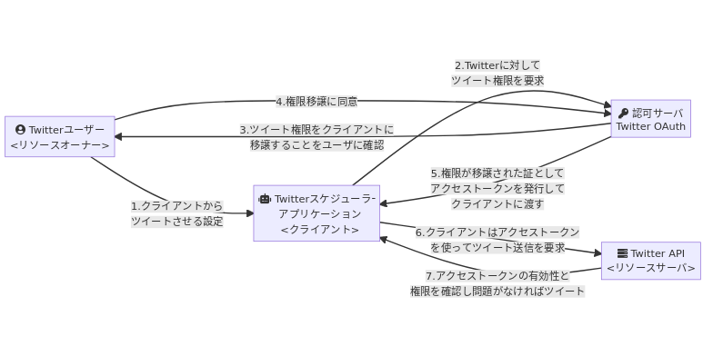

OAuth
概要
OAuthは認可の仕組み。クライアントがリソース所有者に代わってリソースサーバを使用することを可能にする認可フレームワーク。あるいは、アプリケーションがユーザに代わってAPIを使用することを可能にする認可フレームワーク。
権限の情報をやりとりするためにはアクセストークンを用いる。OAuthはアクセストークンを発行するためのルールともいえる。
flowchart LR A[fa:fa-user-circle Twitterユーザー\n<リソースオーナー>] B[fa:fa-robot Twitterスケジューラー\nアプリケーション\n<クライアント>] C[fa:fa-server Twitter API\n<リソースサーバ>] D[fa:fa-key 認可サーバ\nTwitter OAuth] A -- 1.クライアントから\nツイートさせる設定 --> B B -- 2.Twitterに対して\nツイート権限を要求 --> D D -- 3.ツイート権限をクライアントに\n移譲することをユーザに確認 --> A A -- 4.権限移譲に同意 --> D D -- 5.権限が移譲された証として\nアクセストークンを発行して\nクライアントに渡す --> B B -- 6.クライアントはアクセストークン\nを使ってツイート送信を要求 --> C C -- 7.アクセストークンの有効性と\n権限を確認し問題がなければツイート --> B

Memo
OAuthを認証に使う問題点
OAuthは認可についての仕様であり、認証に用いるには問題がある。
- 悪意のあるアプリが、他人のアクセストークンを取得する → アクセストークンを差し替えて、別のユーザとしてログインできてしまう
- アクセストークンを入手した場合、ほかのサイトにログインできてしまう。切符を盗まれるのと同じで、誰が持っているかは問題ではないから
OAuth2.0 State
CSRF対策のために必要。OAuth2.0におけるCSRF攻撃は、一般的なCSRFとは少し意味が異なる。攻撃の標的となったユーザに攻撃者のリソースを処理させる権限を与えること。
Reference
非技術者のためのOAuth認証(?)とOpenIDの違い入門 – @_Nat Zone
意味の違いから詳しく説明。
OAuthを実装してみました | SIOS Tech. Lab
実装する記事。
30分でOpenID Connect完全に理解したと言えるようになる勉強会 - Speaker Deck
図が多くてわかりやすいスライド。
- OpenID Connect(IDDC) = OAuth + IDトークン + UserInfoエンドポイント
- 3種類のフロー
- 認可フロー
- 安全にclient secretを保存できるクライアン用(サーバ)
- インプリシットフロー
- 安全にclient secretを保存できないクライアント用(アプリ)
- ハイブリットフロー
- 安全にアクセストークンやIDトークンを保存できないクライアント用(SPA)
- 認可フロー